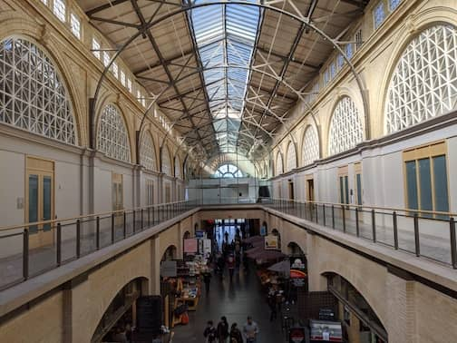
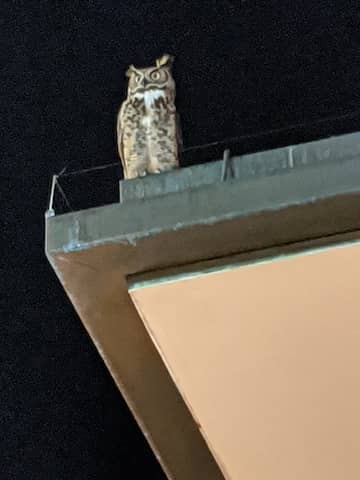

..
SF Chantey Sing
Feb 1 - 2. We didn’t know covid would change the world in just a few weeks.
A relaxing one night getaway in San Francisco. We had a fun time at a public chantey sing along.
Hiked up Coit Tower, ate empanadas at Ferry Building, nice dinner at Mourad, followed by a sundae at Ghirardelli Square where a big owl flew over us.
Dinner at Mourad
 Ferry Building
 Big owl we saw at Ghirardelli Square